소수를 위한, 그러나 모두를 위한 디자인
[전문가칼럼⑭] 소수를 위한, 그러나 모두를 위한 디자인 (Design for the few, but for All)
‘문명을 만드는 기술’로 불려온 건설은 사회의 존속과 발전 가능성을 가늠하는 바로미터 역할을 수행해왔습니다. 현대건설이 보유한 핵심 역량과 기술은 어떠한 미래를 향해 나아가고 있을까요? 현대건설에서는 각 분야 전문가의 시선을 통해 이를 진단해보는 칼럼을 기획 연재합니다.
■ 사회 변화에 따른 디자인 진화
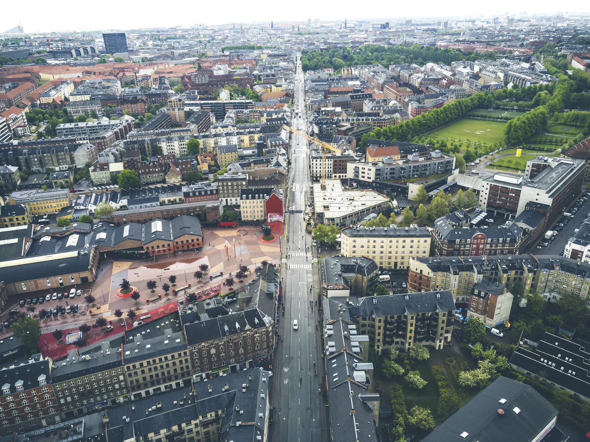
덴마크 코펜하겐 북서쪽 외곽에 위치한 뇌레브로(Nørrebro) 지역은 지역민들의 참여로 이뤄진 예술공원 조성으로 미관은 물론 도시 활력을 찾은 도시 디자인의 성공사례로 꼽힙니다.
산업발전과 함께 디자인은 조형과 기능에 집중해왔습니다. 하지만 최근의 디자인은 외형보다 가치를 중시하는 관점으로 나아가고 있습니다. 이런 변화는 공공디자인의 영역에서 쉽게 찾을 수 있습니다. 덴마크의 뇌레브로 지역은 빈곤 노동자과 외국 이주민이 거주하며 폭동까지 일어난 낙후지역 중 하나였지만 지역민의 의견을 반영해 건설한 공원과 조경으로 분위기를 반전시킨 도시 디자인의 성공사례로 꼽힙니다.
우리나라도 일찍부터 공공디자인의 가치에 시선을 돌렸습니다. 2016년 세계 최초로 ‘공공디자인 진흥법’을 제정한 우리나라는 국민의 안전․편의․배려․품격을 위해 디자인이 활용되도록 하고 있습니다. 법률 제10조 2항에서는 연령․성별․장애 여부․국적 등에 관계 없이 모든 사람이 안전하고 쾌적하게 사용할 수 있는 디자인을 지향할 것을 제시하고 있으며, 국가 정책계획인 ‘공공디자인 진흥종합계획’에서는 세부 실천전략 중 하나로 ▲누구나 걷기 편한 거리·공간 조성 ▲장애인, 고령자를 위한 문화·생활공간 유니버설 디자인 ▲누구나 이용하기 편한 행정서비스 디자인 등을 명시하고 있습니다. 결국 모두가 이용하는 공공디자인은 형상의 아름다움과 기능의 편리함에 이용자 모두를 고려한 이로운 가치를 더해야 한다고 보는 셈입니다.
■ 모두를 위한 배려의 디자인
 일본
요코하마의 장애인, 고령자, 바퀴사용자 등을 고려한 무단차 공간 디자인
사례(왼쪽)와 네덜란드 로테르담에 설치된 휠 전용 페이빙 레인
모습(오른쪽)
일본
요코하마의 장애인, 고령자, 바퀴사용자 등을 고려한 무단차 공간 디자인
사례(왼쪽)와 네덜란드 로테르담에 설치된 휠 전용 페이빙 레인
모습(오른쪽)
앞서 언급한 ‘공공디자인 진흥종합계획’에서 이야기하는 모두를 위한 배려의 디자인은 ‘유니버설 디자인(Universal Design, UD)’과 맥락적으로 유사합니다. UD는 미국의 건축가이자 제품 디자이너인 로널드 메이스 교수가 1970년대 처음 제시하고, 노스캐롤라이나 주립대학교 유니버설디자인센터에서 개념을 정립한 것으로, 성별‧연령‧국적‧문화적 배경‧장애의 유무에 상관없이 누구나 손쉽게 쓸 수 있는 디자인 개념을 의미합니다.
최근에는 UD에서 한 걸음 더 나아간 ‘포용적 디자인(Inclusive Design)’이 UN 해비타트의 새로운 도시 의제로 선정됐습니다. 덕분에 세계 주요 도시들은 모두가 접근 가능하며, 동시에 모든 사람이 혜택을 고루 나누는 디자인을 지향하고 있습니다. 이런 공공디자인의 지향점은 모두가 편리하고 안전한 사회를 만든다는 가치에 부합하며, ‘산업 중심’에서 ‘사람 중심’ 사회로 성장하는 가운데 ‘공평한 배려’를 담는다는 점에서 중요한 의의를 지닙니다.
■ 누구나 읽고 찾기 쉽게 만들기(Legible Design)
UD는 물리적 장애 요소를 제거하는 배리어프리디자인(Barrier Free Design)과 혼용되지만, 구성원들을 심리적으로 배려하는 것이 더 큰 부분을 차지합니다. 자연스러운 사용을 유도하는 ‘넛지 디자인(Nudge Design)’*이나 신경다양성을 고려한 ‘멘탈 케어 디자인(Mental Care Design)’ 그리고 시각적 인지 관계를 고려한 레저블 디자인(Legible Design)까지도 모두 UD 영역에 포함됩니다. 이 가운데서도 레저블 디자인은 ▲명시성 ▲영역성 ▲안전색채 ▲시각정보 ▲행동유도 등의 요소를 활용해 디자인을 보다 명확하게 만듭니다.
*넛지 디자인(Nudge Design): 팔꿈치로 쿡 찌르다는 뜻으로 부드러운 개입과 은유적 방법으로 사용자의 행동을 유도하는 디자인을 의미.
*멘탈 케어 디자인(Mental Care Design): 신경다양성, 스트레스 저하등 디자인을 통해 정서적 측면을 배려하고 임상적 실증을 통해 개선하는 디자인을 의미.
*레저블 디자인(Legible Design): 알아보기 쉬운, 또렷한 등의 사전적 의미와 같이 모든 사람이 명확하고 쉽게 알아볼 수 있는 디자인을 의미.
우선, 명시성을 높이기 위해서는 명도 차이를 활용하는 경우가 많습니다. 명도(Value)란 색의 맑고 어두운 정도를 말하는데, 시각 약자들은 색상의 차이보다는 명도 차이를 통해 더 빠르고 편하게 시각 정보를 인지합니다.
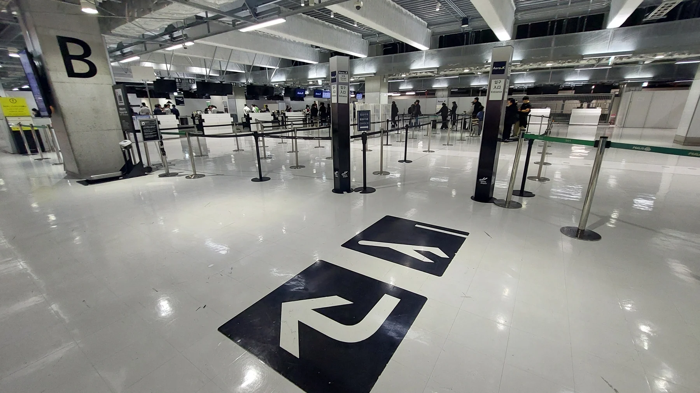
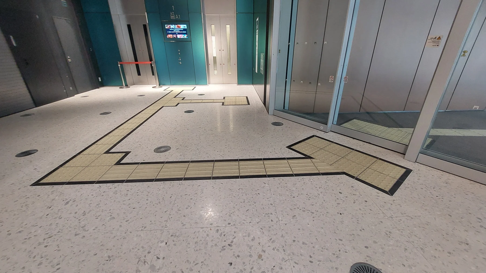
명도 차가 큰 색으로 테두리를 준 유도선은 주변의 명도와 비슷한 상황에서도 명시성이 높아집니다(왼쪽). 특히, 실내공간에서 정보의 인식은 명도 대비효과를 통해 전달하는 것이 가장 단순하면서도 효과적입니다(오른쪽).
공간의 기능과 형태는 영역성(Territory)을 만들면 매우 효과적입니다. 특히 글자와 같은 텍스트 정보보다 색채를 사용하면 더 빠르고 정확하게 정보를 전달할 수 있습니다. 어린이 보호구역을 암적색 아스팔트로 포장해 자연스럽게 운전자의 공간인식을 유도하고, 자동차의 속도를 저감하도록 하는 효과나 장애인 주차구역을 하늘색으로 구별해 무단주차를 방지하는 심리적 효과를 유도하는 것이 그 사례입니다.
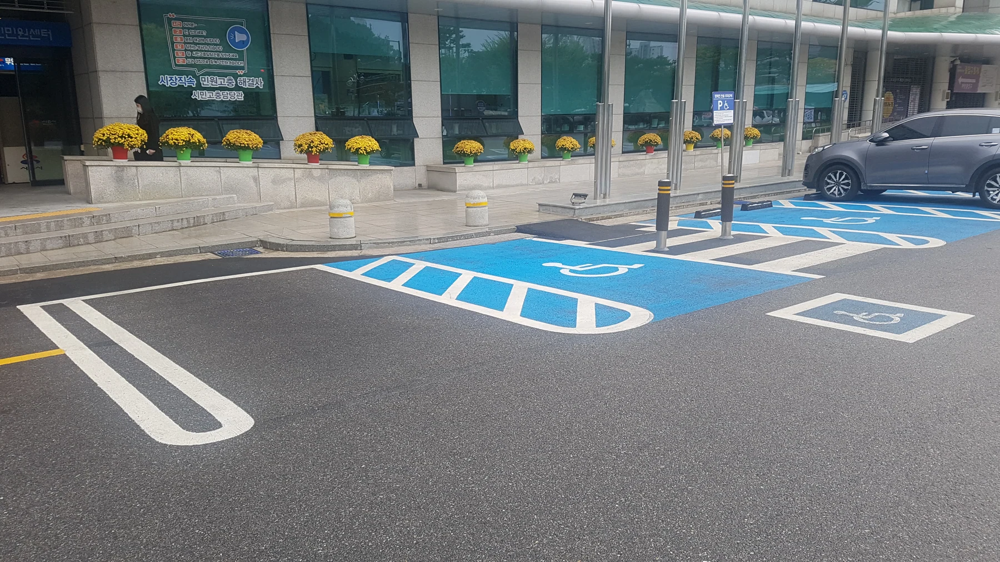
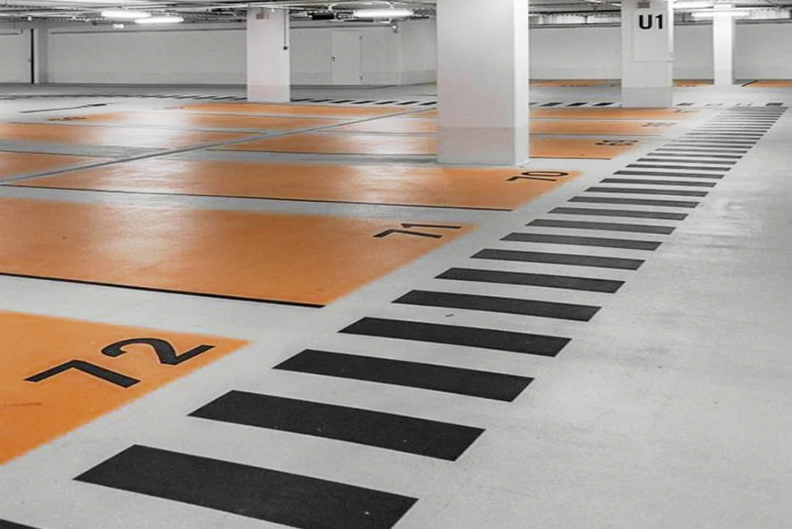
선을 통한 경계 인식보다 면을 통한 영역 인식은 더 쉬운 사용과 심적 편안을 제공합니다.
빨간색 소화기나 비상구의 녹색등. 우리가 일상에서 흔히 만나는 안전색채(Safety Color)입니다. 우리나라는 국제 기준에 따른 한국산업규격(KS)으로 안전색채의 유형과 적용 대상, 적용 공간 등을 규정하고 있습니다. 안전색채는 빨강, 주황, 노랑, 녹색, 파랑, 보라, 흰색, 검정 8가지로, 각 색은 안전과 관련한 의미를 담고 있습니다. 따라서 공공장소에서는 안전색채 원칙을 준수해야 하며, 더불어 배경이 되는 환경색채 또한 잘 관리하여야 합니다. 안전이 중요한 공간에서는 환경색채가 잘 관리되어야 사용자가 안전색을 빠르고 쉽게 인지할 수 있습니다.
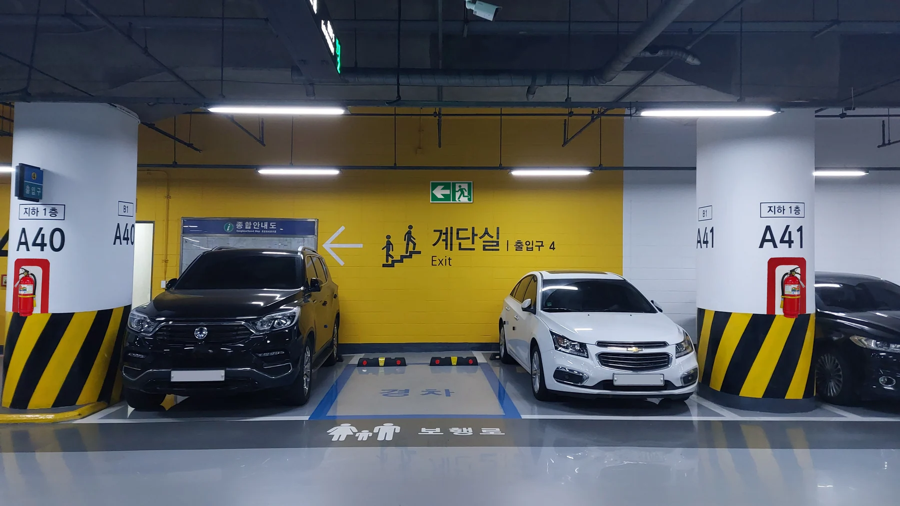
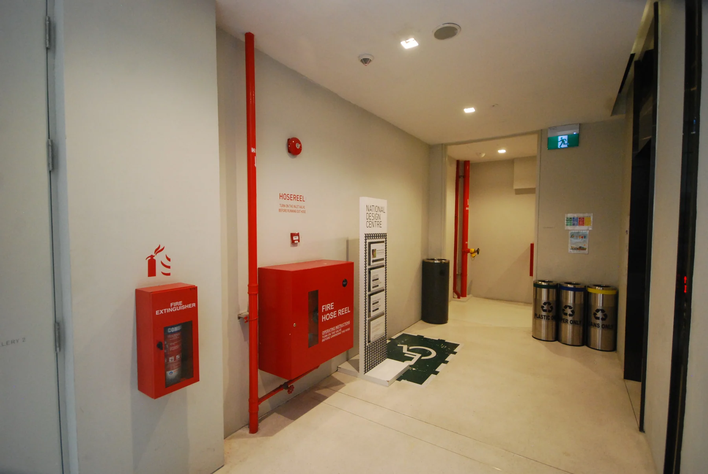
공공장소의 색채는 안전과 관련한 정보를 소통하는 중요한 매개체이므로 혼색이 되지 않도록 주변의 배경색 관리가 중요합니다. 특히, 소방, 비상구, 장애인 지원시설 공간 등은 안전색채의 시인성 향상을 위해 저채도의 환경색채로 관리되어야 합니다.
디자인에도 텍스트 못지않은 정보가 포함됩니다. 인포그래픽(Info-graphic)은 정보를 빠르고 명확하게 표현하기 위해 시각적 이미지로 구현한 것을 지칭합니다. 텍스트 없이도 구체적인 정보를 전달하기 때문에 다문화 구성원이나 글을 읽을 수 없는 사용자들에게까지 포용적 특성을 가지고 있습니다. 한 연구에 의하면 시각 정보는 글자보다 4배 이상의 빠른 인식률을 보인다 합니다. 여기에 색채정보까지 활용한다면 UD 구성에 매우 효과적입니다.
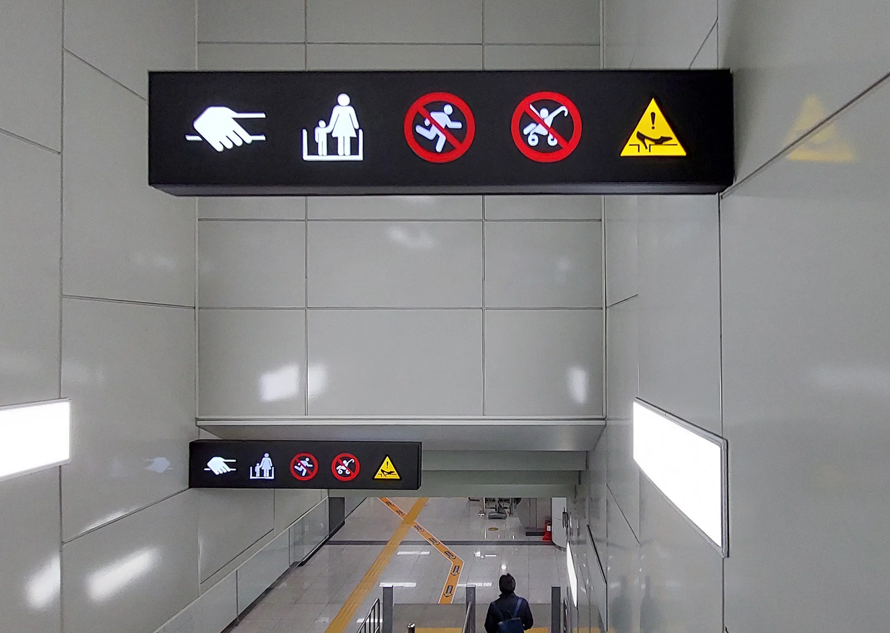
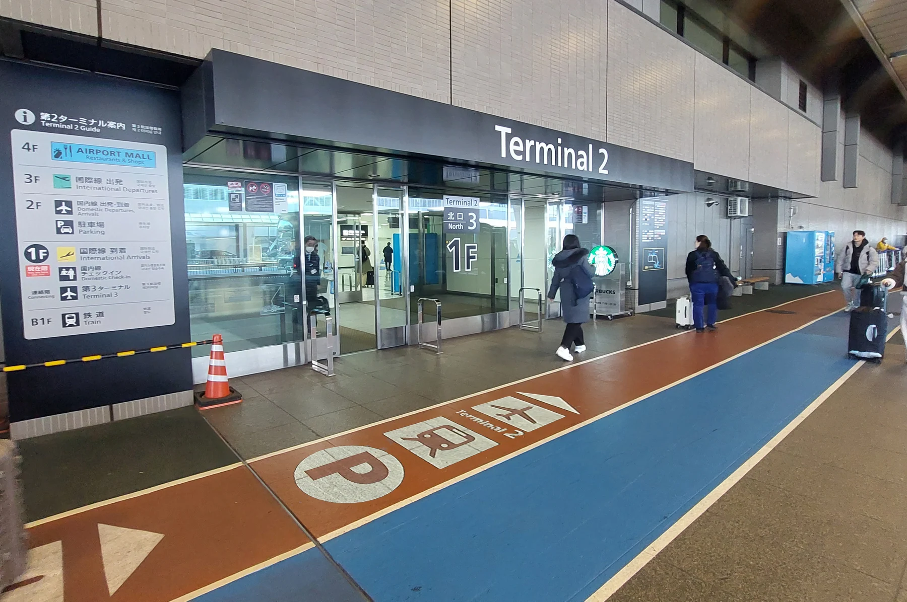
시각정보는 글이 없어도 인포그래픽과 색채만을 이용해 공간 정보를 효과적으로 전달합니다. 공항에서 도착과 출발을 위해 이동하는 동선을 알리는 정보색채(Info-Color)-도착은 땅은 의미하는 갈색, 출발은 하늘을 의미하는 하늘색-는 이용자들에게 쉬운 길찾기를 제공합니다.
마지막으로 행동유도는 어포던스 디자인(Affordance Design) 이론에 근거합니다. 사물이나 환경이 사용자에게 어떤 행동이나 상호작용을 의도적으로 유도하는 이 디자인은 직접적인 규제나 지시보다는 은유나 간접적인 방법을 이용합니다. 일반적인 공간 경험에서 축적된 내용을 적용하거나 심리적인 요인을 사용한 이 디자인은 이어진 선과 점, 소재 등을 활용해 사람들이 공간 내 규칙을 지키거나 길을 찾아가도록 도와줍니다.
아스팔트로 만들어진 주차장은 도로라는 인식을 주어 속도가 올라가지만 보행로에 쓰이는 소재나 색채를 적용하면 운전자의 속도 저감 행동을 자연스럽게 유도하게 됩니다.
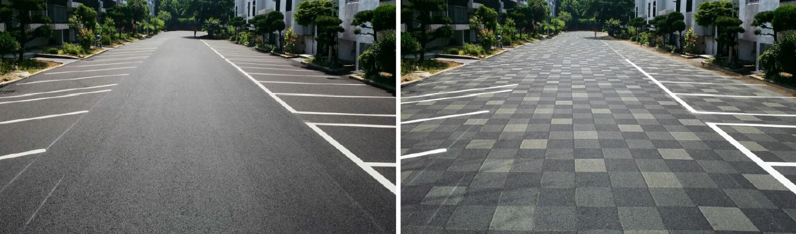
특별한 지시가 없어도 점이나 선을 따라가는 심리적 요인을 활용한 행동유도디자인.
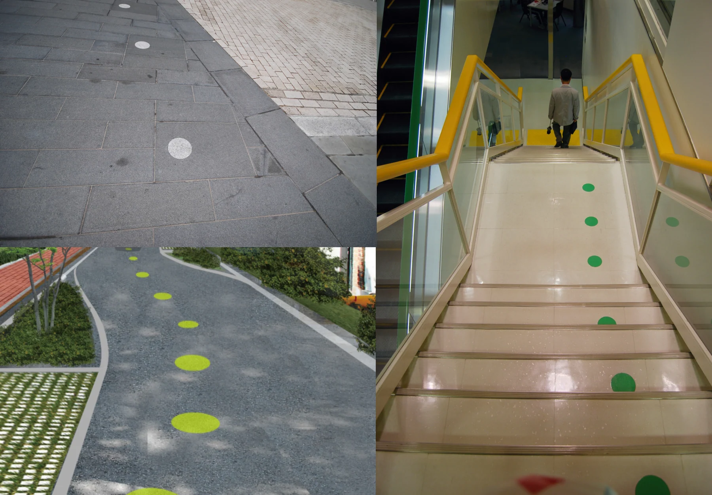
■ 현대건설의 웨이파인딩 시스템 ‘Here&Somewhere’
다양한 입주민이 생활하는 아파트에서도 UD는 필요합니다. 현대건설에서는 노령화나 다민족화 등 사회적 변화에 대응하고, 아이나 시각적 약자들도 직관적으로 정보를 전달받을 수 있도록 UD를 적용해왔습니다. 최근에는 서체, 픽토그램, 컬러까지 종합적으로 고려한 유니버설 디자인 웨이파인딩 시스템(Universal Design Wayfinding System, UDWS) ‘Here&Somewhere’을 건설사 최초로 도입해, 입주민들이 직관적으로 목적지에 도달할 수 있도록 돕고 있습니다.
현대건설의 UDWS는 한국장애인개발원이 개발한 판독성 높은 UD폰트를 사용해 노안이나 저시력자들을 배려했으며, 직관적인 정보전달이 가능한 픽토그램을 개발해 비주얼 커뮤니케이션 효과를 높였습니다. 여기에 생명이나 안전과 직결되는 정보에는 고채도, 고명도의 안전색채를 사용하고, 입주민의 이동을 유도하는 곳은 중채도와 형광색을, 그 외의 배경이나 환경색채에는 무채색을 활용해 위계에 따른 컬러 체계를 수립한 것이 특징입니다. 물론 모든 색채들은 색약자를 위한 시뮬레이션을 마친 조합입니다.
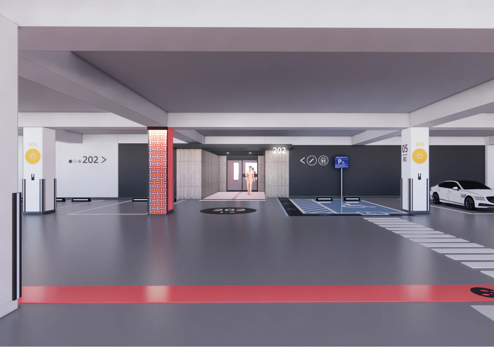
현대건설이 개발한 UDWS ‘Here&Somewhere’을 적용한 지하 주차장 시뮬레이션 모습. 현대건설은 올 하반기부터 순차적으로 이 UDWS디자인을 힐스테이트 현장에 적용할 예정입니다.
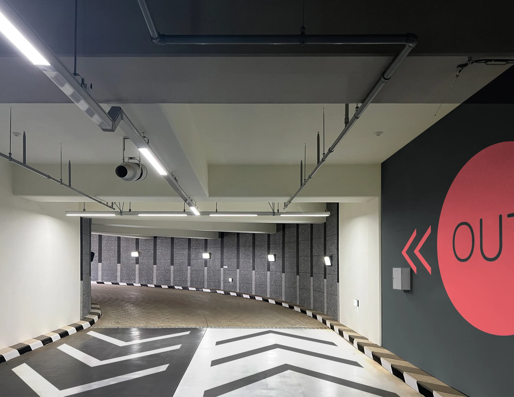
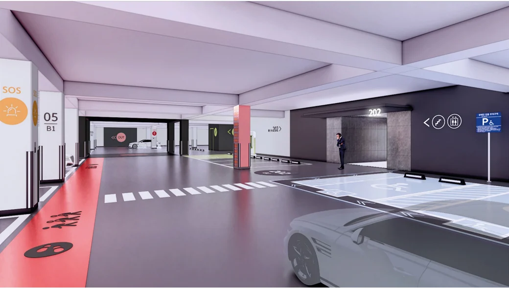
UDWS은 방향을 잃기 쉬운 지하 주차장에서 그 가치를 발휘합니다. 차량통행이 복잡한 교차로의 바닥과 기둥에 명도가 낮은 색을 적용함으로써 먼 거리에서도 쉽게 위험구간을 인지하도록 공간감을 부여하고, 바닥‧벽‧기둥에 인포그래픽과 색상을 통해 이동 동선과 출구 등을 표기해 명료성을 제고한 것이 특징입니다. 또한, 동출입구와 계단실, 안전 피난로 등에 인포그래픽과 컬러, 행동유도를 고려한 어포던스 디자인을 적용해 자연스럽게 동선을 확보하도록 하고 있으며, 강렬한 공간기억 경험을 제공하는 아트월과 아트패턴을 더해 내 위치를 파악하는데 도움을 주고 있습니다. 그야말로 여기가 어디인지 또 어디로 가야하는지 알게 해주는 ‘Here&Somewhere’ 디자인입니다.
■ 소수를 위하지만 모두를 위한 디자인
보통 UD는 장애를 가지고 있는 사용자를 배려하기 위한 디자인으로 이해됩니다. 하지만 장애와 비장애를 나누는 디자인은 포용적일 수 없습니다. 사용자를 구분하는 것이 아닌 모두가 편하게 사용할 수 있는 개념이 UD의 궁극적인 목표입니다. 소수를 위한 디자인은 결국 다수가 사용하기 편한 디자인이며, 사람 중심의 디자인은 우리 사회가 필요로 하는 ‘공간복지’ 중 하나입니다. 유니버설은 이미 검증된 새로운 디자인 영역이며, 우리의 삶의 질을 향상시키는 인본주의 디자인의 핵심인 셈입니다.
글. 사진 이현성
2001년 공공환경과 공공디자인을 연구하는 에스이디자인그룹(SEDG)을 설립한 이현성 교수는 현재 홍익대학교 공공디자인전공과 산업디자인학과 교수로 재직중이며, 중국 노신미술대학 객원교수로도 활동하고 있습니다. 아주대 공대에서 건축학을, 영국 Kingston University London에서 Landscape Urbanism을 전공한 그는 사단법인 한국공간디자인학회와 더나은도시디자인포럼의 부회장을 역임 중입니다. 또한, 문화체육관광부 장관 표창, 경기도 공공디자인 진흥 유공 지사 표창, 대한민국 공공디자인대상 학술부문 대상, 2022 iF Design Award 등을 수상하는 등 다수의 수상 경력을 자랑합니다. 저서로는 <공공디자인으로 대한민국 바꾸기> <공공디자인으로 안전 만들기> 등이 있으며, 공공공간에 대한 문제해결과 공공가치의 창출을 공공디자인 관점으로 연구해오고 있습니다.(
◆ 이 칼럼은 필자의 주관적인 견해이며, 현대건설의 편집 방향과 다를 수 있습니다.
기록기반 추가 복구 텍스트 — 위치 대조 필요
Section0/paragraph-0048/record-34791
2001년 공공환경과 공공디자인을 연구하는 에스이디자인그룹(SEDG)을 설립한 이현성 교수는 현재 홍익대학교 공공디자인전공과 산업디자인학과 교수로 재직중이며, 중국 노신미술대학 객원교수로도 활동하고 있습니다. 아주대 공대에서 건축학을, 영국 Kingston University London에서 Landscape Urbanism을 전공한 그는 사단법인 한국공간디자인학회와 더나은도시디자인포럼의 부회장을 역임 중입니다. 또한, 문화체육관광부 장관 표창, 경기도 공공디자인 진흥 유공 지사 표창, 대한민국 공공디자인대상 학술부문 대상, 2022 iF Design Award 등을 수상하는 등 다수의 수상 경력을 자랑합니다. 저서로는 <공공디자인으로 대한민국 바꾸기> <공공디자인으로 안전 만들기> 등이 있으며, 공공공간에 대한 문제해결과 공공가치의 창출을 공공디자인 관점으로 연구해오고 있습니다.(www.armula.com)
이 글의 판본과 수록 정보 ＋
집필 폴더의 자료; 실제 작성자·집필 기여 미확정
현대건설 기고 PDF와 [최종] 전문가칼럼 PDF를 추가 연결. 파일의 최종 표기는 보존하되 출간용 채택본 확정은 별도.
- 수록 자료
- 2차 [현대건설 기고글] 소수를 위한 그러나 모두를 위한 디자인.hwp
- 자료의 날짜 단서
- 2024-08-16 · 실제 발표일과 다를 수 있습니다.
- 관련 파일
- 9개 / 서로 다른 본문 6종